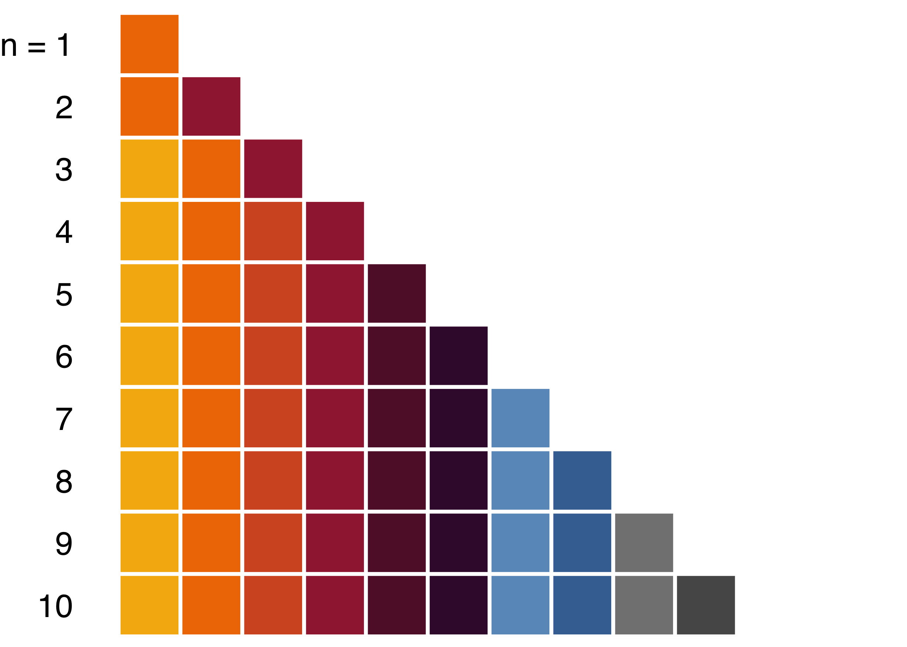

Create ggplot2 charts in the Grattan Institute style.
See the grattantheme vignette to learn how to make your ggplot2 charts Grattan-y with grattantheme.
See the Data Visualisation chapter of Using R at Grattan Institute for more about how to make great charts.
Install grattantheme
The grattantheme package needs to be downloaded and installed from Github. The easiest way to do this is with the devtools package. If you don’t have the devtools package, install it:
Once devtools is installed, you can download and install grattantheme as follows:
devtools::install_github("grattan/grattantheme", dependencies = TRUE, upgrade = "always")
Once grattantheme is installed, you can load it the same way you normally load an R package:
Make your charts look nice
See the grattantheme vignette for a more complete guide.
Use theme_grattan() to format your ggplot2 charts in a style consistent with the Grattan style guide, including elements such as gridline colours and line width, font size, etc. For scatter plots, theme_grattan(chart_type = "scatter") provides a black y-axis.
Use grattan_y_continuous() to set default values for your vertical axis that will work well with most Grattan charts.
Use grattan_colour_manual(n) or grattan_fill_manual(n) to format the n coloured elements of your ggplot2 plot. These functions will choose appropriately-spaced Grattan colours, ordered from either light to dark or the reverse.
The colours that will be used in your plot are:

A range of colours from the style guide (such as grattan_lightorange, grattan_darkred, and so on) are defined for your convenience. Each colour has eight tints available, e.g. grattan_lightorange has lighter variants grattan_lightorange1 through grattan_lightorange8 (closest to white). These can be used to allow highlighting or when filling in block colours behind text, such as when designing tables.
The full set of colour options are:
Save your nice looking charts
Use grattan_save() to save your ggplot2 charts (eg. as .png or .pdf files) for use elsewhere, such as in Powerpoint, LaTeX, or the Grattan Blog, with the size and resolution set to style guide-consistent values. You can save your charts in a variety of sizes and styles (see ?grattan_save() for a list).
Want to save your chart as a Powerpoint file? Use grattan_save(save_pptx = TRUE) or the standalone grattan_save_pptx() function.
Want to save your chart and accompanying data as a properly-formatted .xlsx workbook? Use grattan_save(save_data = TRUE) or the standalone save_chartdata() function.
Save your chart in all Grattan formats - along with chart data - using grattan_save_all().
Save animated charts
Use grattan_anim_save() to save gganimate animations formatted in the Grattan style.
Notes
Some graph defaults (such as colour) will be modified during your R session; restart R to restore all defaults.
Some manual modification to your chart will most likely be required in order to make it fully consistent with the style guide, just as it would in other visualisation software or Excel/Powerpoint.